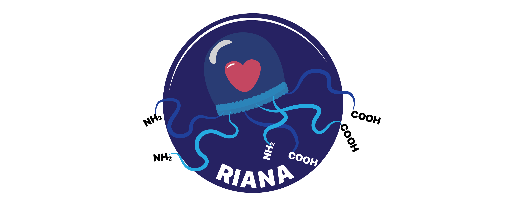

RIANA - Relative Isotope Abundance Analyzer
Protein turnover, Proteomics, Mass spectrometry
- Edward Lau Lab, University of Colorado School of Medicine
- Maggie Lam Lab, University of Colorado School of Medicine

About RIANA
RIANA (Relative Isotope Abundance Analyzer) is a software to automate the analysis of mass spectrometry- based protein turnover measurement experiments.
RIANA is written to be flexible to accommodate different protein stable isotope labels, including heavy water (D2O) and SILAC (e.g., 13C6-lysine or other amino acids) experiments.
RIANA supports a Snakemake pipeline that uses other existing tools in the community, requiring only mass spectrometry data files (.mzML) as input to perform database search, post-processing, peak integration, and output of best-fit kinetic rate constants.

Downloads
Latest Updates
v.0.8.1
- Minor bug fixes
v.0.8.0
- Added support for automatic isotopomer selection. To use this feature, run
riana/riana.pywith--fs Auto. - Added experimental support for in vitro heavy water labeling. To use this feature, run
riana/riana.pywith--label hw_cell.
v.0.7.2
- Included additional Snakemake options in the config files
- The argument for isotope now takes in multiple numerical values separated by space e.g., 2 4 6 8
See Change Log for details.
The latest version and source code of RIANA can be found on github: https://github.com/ed-lau/riana.
See the Quick Start and Documentation for instructions.
Contributors
- Edward Lau, PhD - ed-lau
- Jordan Currie, MSc - jordancurrie
Citations
If you use RIANA or the associated methods in your research, please consider citing the following papers:
Original publication, heavy water and SILAC comparison:
- Harmonizing Labeling and Analytical Strategies to Obtain Protein Turnover Rates in Intact Adult animals Hammond DE, Simpson DM, Franco C, Wright Muelas M, Wasters J, Ludwig RW, PRescott MC, Hurst JL, Beynon RJ, E Lau Molecular & Cellular Proteomics 2022, 100252 doi:10.1016/j.mcpro.2022.100252 Epub 2022 May 28. PMID: 35636728; PMCID: PMC9249856.
Rule-based mass isotopomer selection method for heavy water:
- Improved Method to Determine Protein Turnover Rates with Heavy Water Labeling by Mass Isotopomer Ratio Selection Currie J, Ng DCM, Pandi B, Black A, Manda V, Durham C, Pavelka J, Lam MPY, Lau E. Journal of Proteome Research 2025 Apr 4;24(4):1992-2005. doi: 10.1021/acs.jproteome.4c01012 Epub 2025 Mar 18. PMID: 40100644; PMCID: PMC11977540.
Application of heavy water labeling to cell culture:
- Deuterium Labeling Enables Proteome Wide Turnover Kinetics Analysis in Cell Culture Alamillo L, Ng DCM, Currie J, Black A, Pandi B, Manda V, Pavelka J, Schaal P, Travers JG, McKinsey TA, Lam MPY, Lau E. bioRxiv [Preprint] 2025 Jan 31:2025.01.30.635596. doi: 10.1101/2025.01.30.635596 PMID: 39975278; PMCID: PMC11838351.